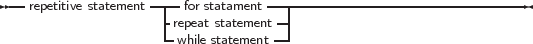

_________________________________________________________________________________________________________
Structured statements
___________________________________________________________________
Structured statements can be broken into smaller simple statements, which should be executed repeatedly, conditionally or sequentially:
_________________________________________________________________________________________________________
Structured statements
___________________________________________________________________
Conditional statements come in 2 flavours :
_________________________________________________________________________________________________________
Conditional statements
___________________________________________________________________
Repetitive statements come in 3 flavours:
_________________________________________________________________________________________________________
Repetitive statements

___________________________________________________________________
The following sections deal with each of these statements.